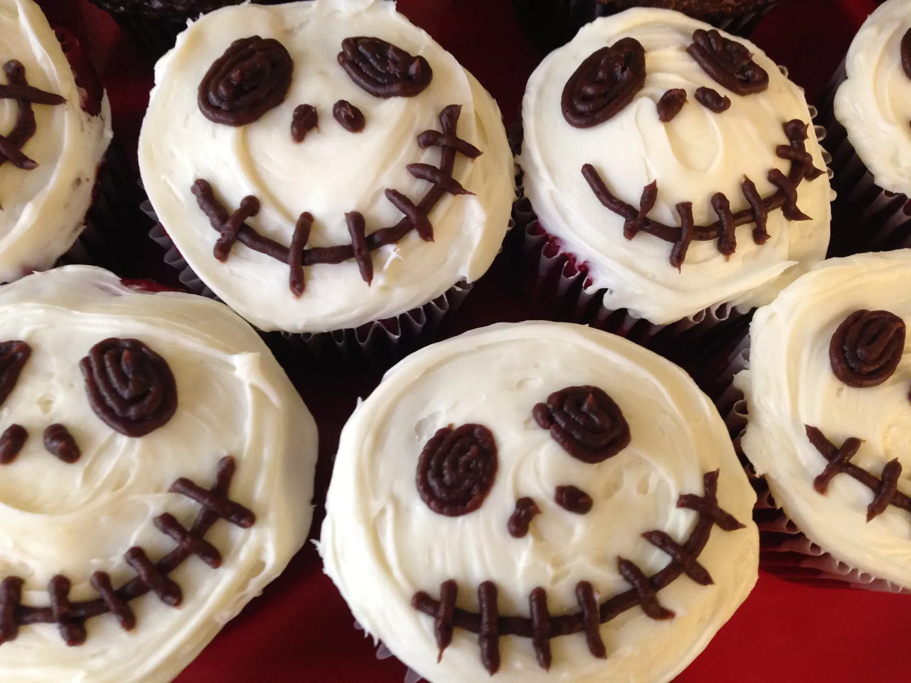

Creepy Halloween Skull Cupcakes

Description
Since Halloween is coming at the time of this project's submission, the last recipe would be a Halloween Skull Cupcake!
This cupcake was inspired by the movie 'Night of the living Dead' according to the author!
Ingredients
- 1 (18.25 ounce) package devil's food cake mix (such as Duncan Hines®)
- 1 cup water
- 3 eggs
- 1/3 cup vegetable oil
- 1 ½ (16 ounce) packages prepared vanilla frosting
- 1 (7 ounce) pouch prepared chocolate frosting